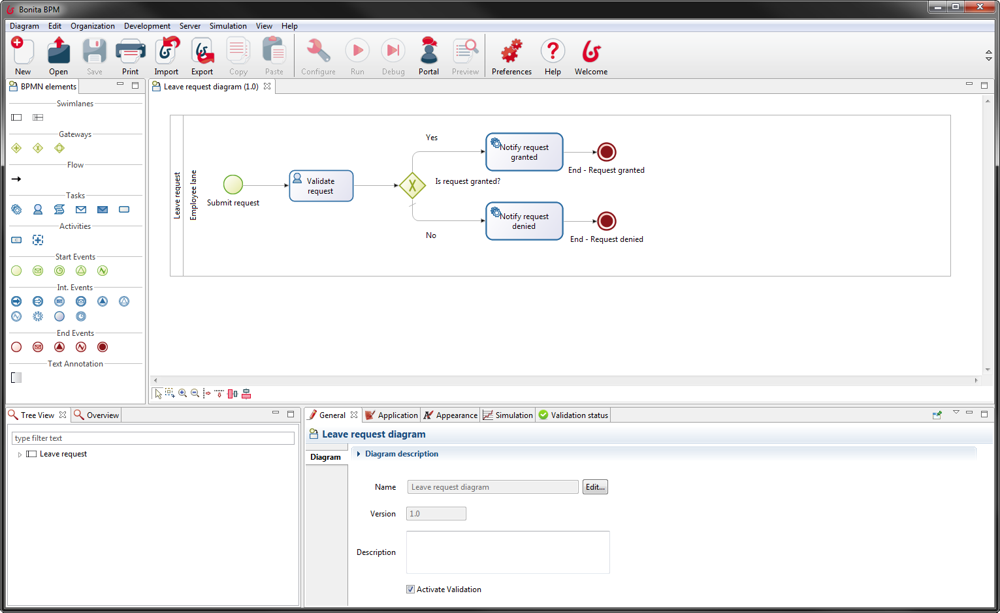
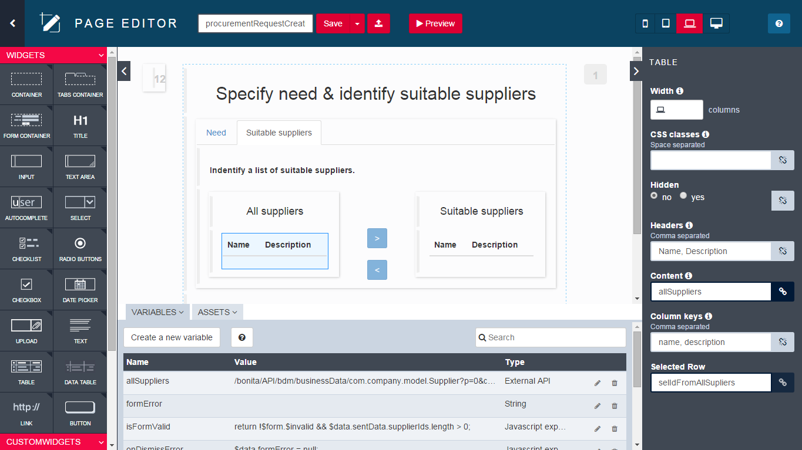
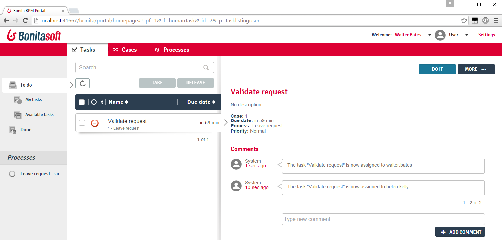
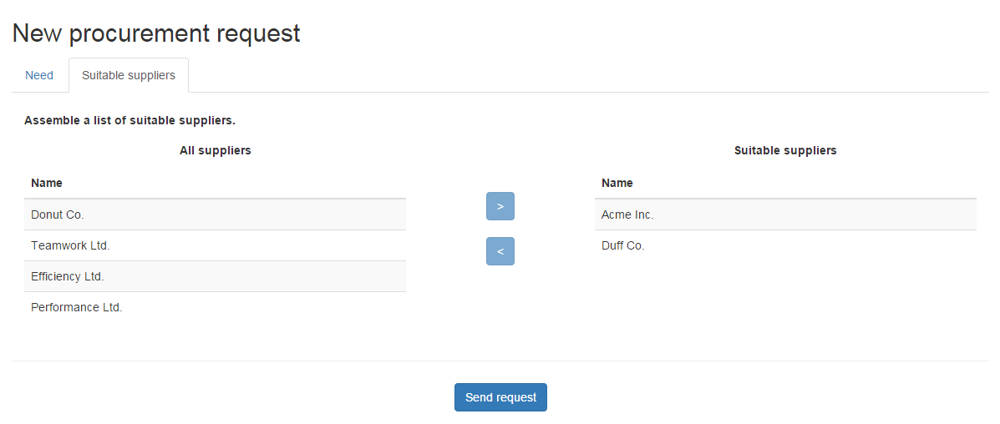

Agenda
- BPM Goals
- Bonita BPM Components
- BPMN 2.0
- Data & Contracts
- Forms & Pages
- Actors
- Connectors
- BPM-based applications
- Deployment
BPM Goals
Collaborate during the definition and execution of Business Processes
Track process execution
Optimise processes
Bonita BPM Components
| Bonita Studio | ||
| Bonita Engine | } | Bonita Platform |
| Bonita Portal | ||
Bonita BPM Studio : Process Editor
Bonita BPM Studio : UI Designer
Bonita BPM Engine
In charge process execution (no built-in UI)
Based on Java SE 7+ / Java EE 6
Packaged with the Bonita Portal in a Java web application
Requires :
- A Java application server
- A JDBC compliant transactional database
Bonita BPM Portal
End user and administration web interface
Displays the list of available tasks
Allows to deploy and configure processes
Bonita BPM Portal : Forms
Renders forms created with UI Designer
Served within Bonita Portal or embedded in an application
Bonita BPM Portal : Applications
Allows to deploy Business Applications composed of custom pages implemented with the UI Designer

BPMN 2.0
Standard notation (OMG) for process modelling
A process is represented by a Pool 
Key elements :
 | Start Event |
 | Human Task |
 | Automated/Service Task |
 | End Event |
Elements are linked together by Transitions →
Gateways
3 types of gateways:
 | Exclusive |
 | Parallel |
 | Inclusive |
Best practice: in order to avoid bad designs, gateways should be placed in a symmetrical manner when possible:

Exercise 1
Modelling a basic process
Download the instructions and corrections from this link :
Data : Scopes & Lifecycles
BDM (Business Data Model)
Accessible from anywhere, stored in Business DB
+ Use case: store any kind of data manipulated by processes instances and/or applications.
Process & Step data
Accessible within a single process or step instance, stored in Engine DB, archived with process instance
+ Use case: chain connectors execution.
Form data
Accessible within form, never persisted
+ Use case: process and store data displayed and updated in forms
Data
| BDM | Process & Task data | Form data |
|---|---|---|
|
|
|
Documents: files with revisions can be declared at process level
Contracts
Set of required input parameters with validation rules.
Data sent by forms must satisfy a contract in order to
- Start a process
- Execute a human task
Contributes to the decoupling of process logic and user interface.
Exercise 2
Adding data and specifying contracts
Forms & Pages
Created with UI Designer with containers and widgets
Based on AngularJS and Bootstrap.
2 types of forms:
- Editable forms that must satisfy a contract
- Process instantiation
- Human tasks
- Overview form (read-only) defined at pool level
Widgets
A set of widgets is available out of the box (text field, select, date picker...)
Custom widgets can be created with the UI Designer
Exercise 3
Creating forms
Actors
Declared at pool level. Associated with lanes or human tasks. 2 options available: actors and actors filters
| Benefits | Limitations | |
|---|---|---|
| Actors | Always up to date with organization | Static mapping that can not rely on business/process data |
| Actor filters | Dynamic mapping that can include business/process data | Executed only once at task instantiation |
Exercise 4
Configuring actors
Connectors
Allows processes to interact with IS (opposite of the Bonita APIs)
A set of standard connectors is shipped in the Studio
Custom connectors can be:
- Implemented using the Studio or other Java IDEs
- Imported from the Community website
Exercise 5
Using a connector to send an email
BPM-based applications
Combine processes together to handle a real business use case
Respect the MVC design pattern:
- Model is the business data model
- View is a combination of pages and process forms
- Controller is a set of processes
Applications are deployed and hosted in Bonita Portal
Exercise 6
Create a leave request application
Process Deployment
Main steps for process deployment :
| 1. Process configuration 2. Bar file generation |
Studio |
| 3. Bar deployment 4. Process configuration 5. Process activation |
Portal |
Application Deployment
Main steps for application deployment :
| 1. Export pages from UI Designer |
Studio |
| 2. Import pages as Resource 3. Create an application 4. Configure the application 5. Add the pages to the application |
Portal |
Thank you for your attention
Any questions? Do not hesitate.
Extra Resources:
- Documentation - documentation.bonitasoft.com
- Corporate Website - bonitasoft.com
- Community - community.bonitasoft.com
- GitHub - github.com/bonitasoft